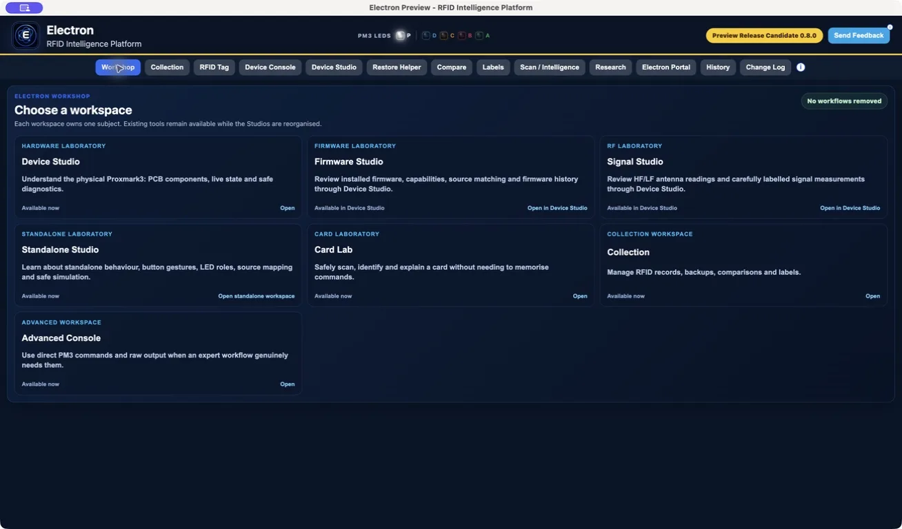
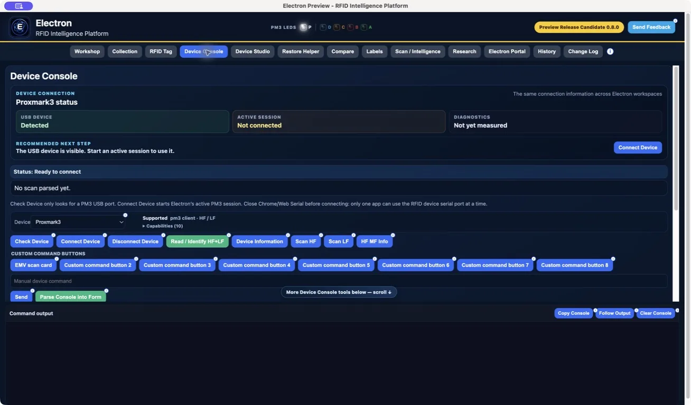
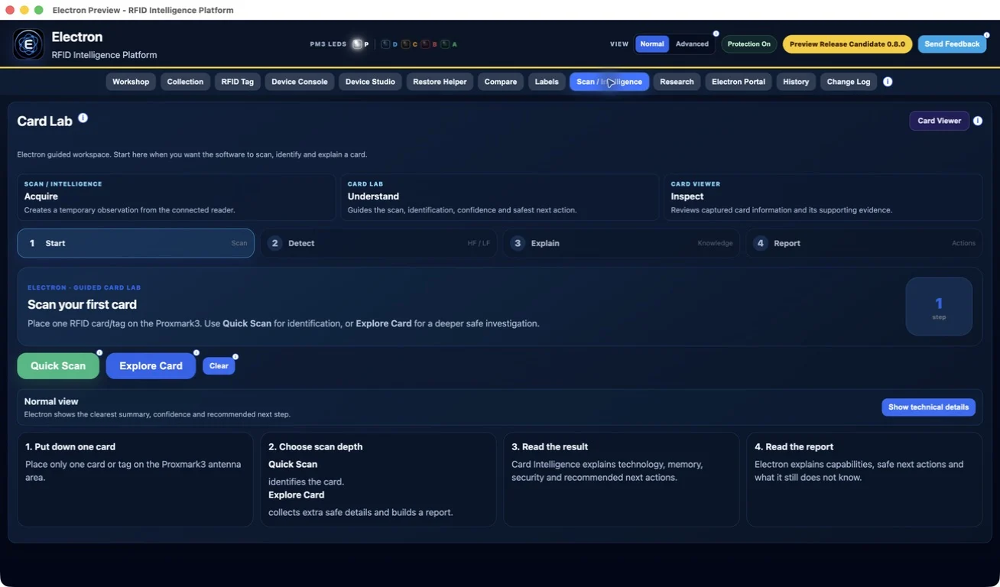

Electron Public Preview 1 is being prepared as a local-first RFID Collection and evidence platform. Core workflows support compatible stock Proxmark3 firmware, while extra hardware status appears only when the connected firmware reports it.
The standard Preview lasts 30 days from first launch. After expiry, Electron retains the saved RFID Collection but requires a valid signed Preview Extension Key before the full app can reopen.
DistributionUnsigned · not notarized · not published
Preview access30 days from first launch
Data sharingUser controlled
Firmware supportCapability based
Tester Notes
Before testing
Electron Preview is intended for experienced early testers. A firmware change is not required for the core workflows. Early Public Preview 1 is being prepared without Apple Developer ID signing or Apple notarization; testers must verify the official source, release details and SHA-256 before using the installer.
Preview Notes
What to test first
Open the app and confirm the welcome flow feels clear.
Connect a compatible Proxmark3 and verify HF/LF scanning, Collection records and Card Viewer.
Confirm Device Studio accurately describes the capabilities reported by the connected firmware.
Create a feedback package when something behaves unexpectedly.
Remove private keys, card dumps and personal or payment-card data before sharing feedback.
Screenshots
Current Public Preview interface
These images show the current Release Candidate interface. Availability and results still depend on the connected hardware and firmware capabilities.

WorkshopChoose a workspace according to the task you want to perform.

Device connectionUSB detection, active-session state and diagnostic readiness remain separate.

Card LabStart with a quick identification scan or a deeper safe exploration.
Changelog
Current focus
The first public Preview focuses on device connection, capability discovery, explainable scanning, durable Collection records, Card Viewer, report generation and user-controlled local feedback.